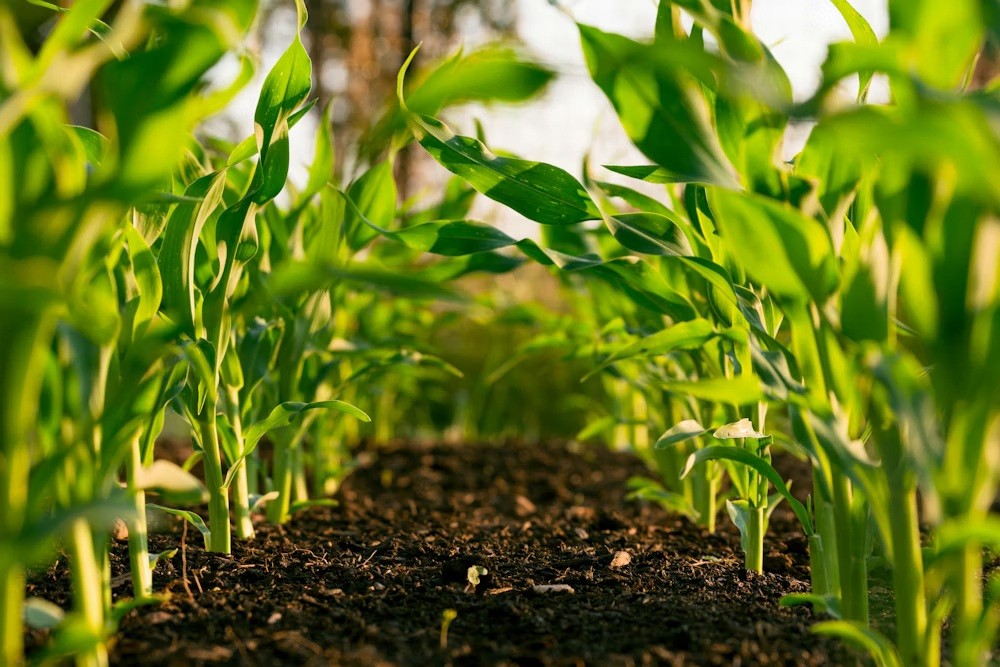

Agri-Silviculture
The "Two-Story" Farm: Growing timber in the sky and crops on the ground.
1. Site Feasibility & Species Selection
🌳 Tree Selection
Deep Rooted.
Select trees with deep taproots (e.g., Teak, Melia dubia) so they don't compete with crops for
surface water. Avoid surface feeders.
🌾 Crop Compatibility
Shade Tolerance.
During the early years, you can grow any crop. As trees mature, switch to shade-loving crops
like Turmeric, Ginger, or Coffee.
☀️ Orientation
East-West Rows.
Plant tree rows from East to West. This minimizes the shadow cast on the crops during the day,
maximizing photosynthesis.
2. Infrastructure & Layout
The classic design is "Alley Cropping": wide alleys of sunlight for crops, narrow strips for trees.
🚧 Construction Specs
- Spacing: Standard model is 10ft x 10ft or wide-row model 20ft (between rows) x 5ft (between trees).
- Alleys: The 20ft gap is the "Alley" where you plow and plant seasonal crops (Groundnut/Pulses).
- Root Barriers: Dig a 2ft deep trench alongside tree rows to cut lateral roots, forcing trees to go deep.
3. The Nutrient Cycle
Trees act as "Nutrient Pumps," pulling minerals from deep soil and dropping them as leaves.
Pump minerals from sub-soil
Falls & decomposes on top
Enriches topsoil layer
Feed on enriched topsoil
4. Operational Calendar
This is a long-term game. The calendar spans years, not just months.
Plant trees. In the wide spaces, plant sun-loving crops (Corn/Vegetables). Trees are small, so shading is zero.
Trees start casting shadows. Prune lower branches (up to 50% height) to allow light and produce knot-free timber.
Canopy closes in. Switch to shade-tolerant intercrops like Ginger, Turmeric, or Fodder Grass.
Harvest the timber. The "Lump Sum" payout. Replant trees and restart the cycle.
5. Risks & Solutions
⚠️ RISK: ALLELOPATHY
Chemical Warfare. Some trees (like Eucalyptus or Walnut) release toxins to kill nearby plants. Never plant these with food crops. Use Nitrogen-fixers like Gliricidia or Acacia instead.
| Problem | Solution |
|---|---|
| Yield Reduction (Shade) | Aggressive pruning of tree branches. Align rows East-West. |
| Root Competition | Dig trenches along tree rows to severe lateral surface roots. |
6. Economics
💰 The "Pension" Plan
- Crops (Short Term): Pay for daily maintenance and living expenses.
- Timber (Long Term): Acts as a "Fixed Deposit". A massive payout after 10-12 years (e.g., Teak/Mahogany).
🛡️ Climate Shield
- Erosion Control: Tree roots hold soil during heavy rains.
- Micro-Climate: Trees reduce temperature and wind speed, protecting sensitive crops from heat stress.